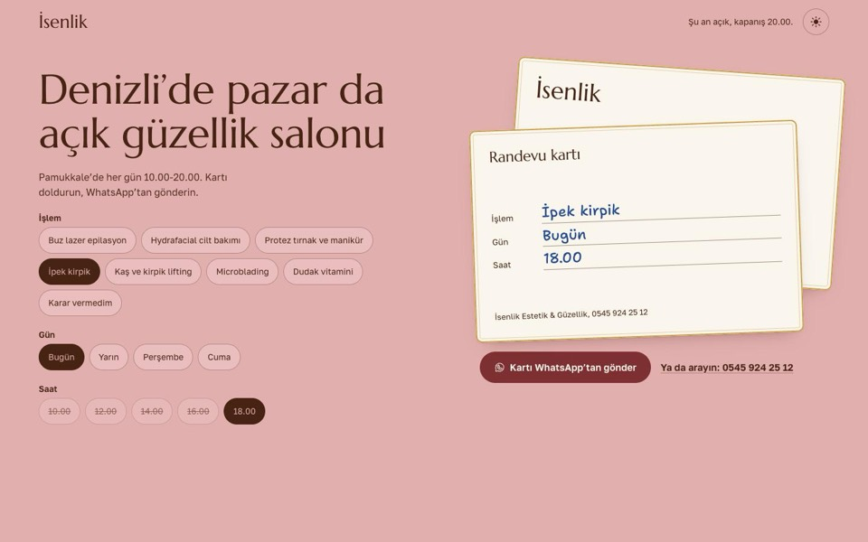
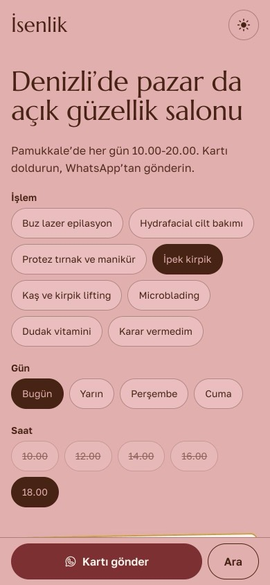
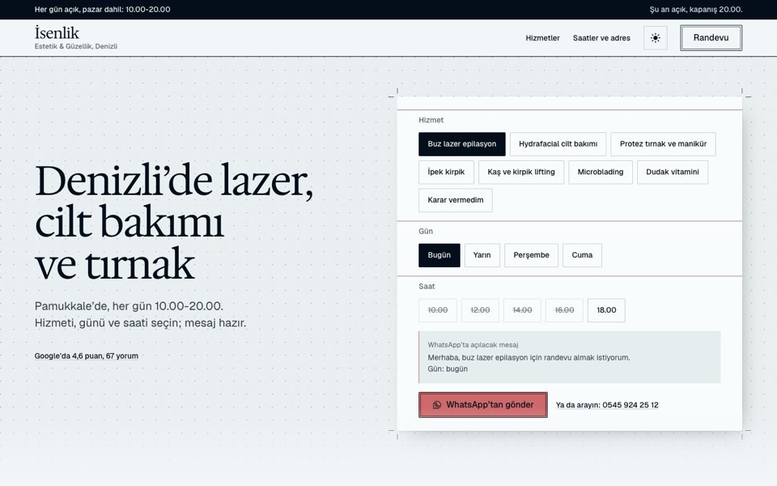
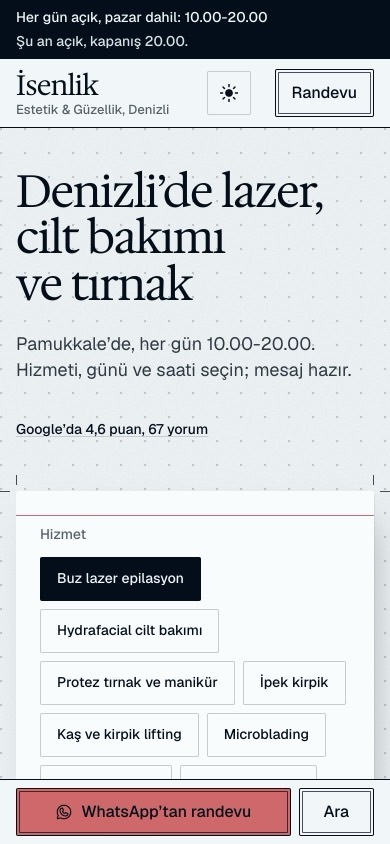

İsenlik için iki yön
İkisinde de WhatsApp’a hazır randevu mesajı, iki telefon, adres, her gün 10.00-20.00 saatleri ve Google puanı var. Fotoğraflar geçici; merkezin kendi fotoğraflarıyla değişir.


Kart
Site, salonun randevu kartı. Ziyaretçi işlemi, günü ve saati seçer; kartın arkası tükenmez kalem mavisiyle dolar ve WhatsApp’a gider. Hizmetler yana kayan kart destesi, saatler haftanın yedi günü; başlık rakiplerde olmayan gerçeği söylüyor: pazar da açık.
Demoyu gör

Prova
Bir tasarım stüdyosunun prova kâğıdı: kesim işaretleri, ölçü çizgileri, randevu fişi. İmzası microblading kutusundaki kaş haritası (başlangıç, kemer, bitiş).
Demoyu gör